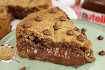

Receitas
Avaliações
Acessar o Site
Receita de Torta de Cookie
🍪Esta receita de Cookie gigante recheado de nutella é maravilhosa e super fácil de fazer!🍪
Acessar o Site

Ingredientes:
1 Xícara de manteiga
1 Pitada de sal
1 Colher (chá) de bicarbonato de sódio
1 Xícara de chocolate em gotas
1 Xícara de açúcar mascavo
1 Ovo
2 Xícaras de farinha de trigo
Modo De Preparo:
Bata a manteiga e o açúcar por 5 minutos em uma batedeira.
Adicione o sal e o ovo, bata até misturar por completo.
Coloque o bicarbonato de sódio e a farinha de trigo e bata mais uma vez, até a farinha se incorporar na massa.
Por fim, coloque as gotas de chocolate e misture com uma espátula.
Leve a massa para geladeira por 20 minutos.
Distribua uma parte da massa em uma forma de fundo removível.
Coloque a nutella dentro da forma.
Abra a massa reservada em um pedaço de plástico-filme e cubra a forma fazendo uma tampa.
Leve para assar em forno preaquecido em 180 graus por meia hora ou até dourar.
Informações Nutricionais
Calorias= 494,75 kcal
Carboidratos= 62,81 g
Proteínas= 9,25 g
Gorduras Totais= 23,50 g
Gord. Saturadas= 11,83 g
Gord. Trans= 0,00 g
Fibras= 3,92 g
Sódio= 115,84 mg